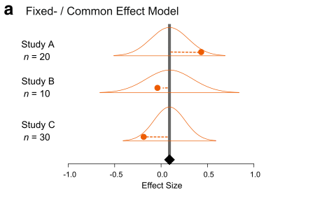

First read our introduction to meta analysis with instructions for calculating effect sizes. Now, we consider the statistical models to estimate mean effect sizes and the influence of moderator variables.
Fixed-effect and random-effects models
There are two main models of meta-analysis: 1) the fixed-effect model and 2) the random-effect model (actually we say 3 types, but the third one is the extension of the second model). Because fixed effects mean something different in another context, this naming is a bit confusing. So people now call the first model ‘common-effect’ model. You can see a visual representation of these two models (from Figure 4 in Nakagawa et al. 2017).

A math representation for the common-effect model is:
\[\begin{equation}
y_i=b_0+e_i,
\\
e_i\sim \mathcal{N}(0,v_i),\
\end{equation}\]
where \(y_i\) is the \(i\)th effect size (from \(i\)th study), \(b_0\) is the overall mean (or meta-analytic mean), \(e_i\) is a deviation from the overall mean and it is normally distributed with \(v_i\), which is the study specific sampling variance (you can get this from formulas above). Note that weights for this model are \(1/v_i\). As you can see, this is a very simple model; basically, we are estimating the mean considering weights.
Importantly, this model is assuming that there is a common mean for all studies included. Is this realistic? Probably not, especially, if you are combining different species!
The random-effects model can be written as:
\[\begin{equation}
y_i=b_0+s_i+e_i,
\\
s_i\sim \mathcal{N}(0,\tau^2),\
\\
e_i\sim \mathcal{N}(0,v_i),\
\end{equation}\]
where \(s_i\) is a study-specific deviation from the overall mean for \(i\)th study, it is normally distributed with the between-study variance, often referred to as \(\tau^2\), and the others are the same as above. Unlike the common-effect model, a random-effect model assumes that different studies have different means. Note that weights for this model are \(1/(\tau^2+v_i)\). We revisit this point, as it turns out to be quite important.
Running a common-effect model
Let’s use the function rma from metafor to run a common-effect model.
common_m <- rma(yi = yi, vi = vi, method = "FE", data = dat)
We specify the effect size (yi), its variance (vi), the method (“FE” for fixed-effect) and the data frame (dat).
To see the output, use summary on the model object:
summary(common_m)
##
## Fixed-Effects Model (k = 102)
##
## logLik deviance AIC BIC AICc
## -245.9580 769.0185 493.9160 496.5410 493.9560
##
## I^2 (total heterogeneity / total variability): 86.87%
## H^2 (total variability / sampling variability): 7.61
##
## Test for Heterogeneity:
## Q(df = 101) = 769.0185, p-val < .0001
##
## Model Results:
##
## estimate se zval pval ci.lb ci.ub
## 0.2088 0.0054 38.3374 <.0001 0.1982 0.2195 ***
##
## ---
## Signif. codes: 0 '***' 0.001 '**' 0.01 '*' 0.05 '.' 0.1 ' ' 1
OK, it was easy! The overall mean is statistically significant and it’s around 0.2. What does 0.2 mean? Let’s convert this back into the original scale - a response ratio of the control and experimental means.
exp(0.2)
## [1] 1.221403
This means a plant trait (e.g. mass) was 22% larger in the experimental group (RR\(=\bar{x}_{E}/\bar{x}_{C}\)), which seems like a pretty large effect to me (remember we need to interpret our results in a biological meaningful way). Note that Jensen’s inequality states that this is a bit wrong, but we will not get into this today.
Running a random-effects model
Now, we move onto the random-effects model - a more realistic model. Again, we use the rma function, but this time change the method to REML which is the default and the best method for the random-effect meta-analysis.
random_m <- rma(yi = yi, vi = vi, method = "REML", data = dat)
summary(random_m)
##
## Random-Effects Model (k = 102; tau^2 estimator: REML)
##
## logLik deviance AIC BIC AICc
## 7.0449 -14.0898 -10.0898 -4.8596 -9.9674
##
## tau^2 (estimated amount of total heterogeneity): 0.0262 (SE = 0.0053)
## tau (square root of estimated tau^2 value): 0.1619
## I^2 (total heterogeneity / total variability): 88.90%
## H^2 (total variability / sampling variability): 9.01
##
## Test for Heterogeneity:
## Q(df = 101) = 769.0185, p-val < .0001
##
## Model Results:
##
## estimate se zval pval ci.lb ci.ub
## 0.2553 0.0198 12.8899 <.0001 0.2165 0.2941 ***
##
## ---
## Signif. codes: 0 '***' 0.001 '**' 0.01 '*' 0.05 '.' 0.1 ' ' 1
Compare the overall mean from this model with the common-effect model. Oh, the overall mean of the random-effects model is actually bigger than that of the fixed-effect model. OK, that sometimes happens (we will find out that this probably is an over-estimation later). We expect 95% CI is wider (i.e. more realistic) in this random-effects model as this model has a better assumption than the common-effect model.
Understanding heterogeneity
The output from the random-effects model has more things than the common-effect model. We have tau^2 (\(\tau^2\)) and I^2 (\(I^2\)), two very common measures of heterogeneity (note that H^2, or \(H^2\) is a transformation of \(I^2\)).
Heterogeneity is variation in effect sizes, which is not accounted by the sampling error variance.
In other words, real variation in the data. I think \(I^2\) is a quite important index as it can tell the percentage of real variation in your meta-analytic data. It can be given by (which you saw within the figure of the random-effects model above):
\[\begin{equation}
I^2=\frac{\tau^2}{(\tau^2+\bar{v})},
\end{equation}\]
where \(\bar{v}\) is a representative value of \(v_i\) (or think \(\bar{v}\) as the average of \(v_i\) although it is not quite it). Note that the denominator is the whole variance which exists in the data. The benchmark values for \(I^2\) are 25, 50 and 75% for low, moderate and high heterogeneity, respectively (Higgins et al. 2003).
Our \(I^2\) value is 88.9% so very high and this value is, as you expect, statistically significant when tested with the \(Q\) value (which follows a \(\chi^2\) distribution defined by the df value, in this case \(df = 101\)).
We recently did a meta-analysis of meta-analyses (a secondary meta-analysis) looking at what is the average value of \(I^2\) in the field of ecology and evolution (Senior et al. 2016). The average value was 92%! So this indicates that we should really be fitting the random-effects model rather than the common-effect model because the latter assumes heterogeneity to be zero or \(\tau^2=0\) and \(I^2 = 0\). Or is it really? We find this out later.
Checking for publication bias
OK, it seems like an CO\(_2\) increase promotes plant growth (which may not be surprising), but we are assuming the data set we have does not suffer from publication bias.
Publication bias in its simplest form is that significant results are more likely to be published than non-significant results.
But there are several methods, which people have been using. The two commonest methods, often used as a set, are: 1) funnel plot, which one uses to detect a funnel asymmetry (a sign of publication bias), and 2) Egger’s regression test with which you test funnel asymmetry statistically.
What am I talking about by ‘funnel asymmetry’? If you plot effect sizes and its standard error in a decreasing order (\(se\); see the figure below) , we suppose to see a funnel up-side-down with effect sizes with low \(se\) (or high weights) are more tightly aggregated than effect sizes with high \(se\) (or low weights). But this funnel shape occurs only when we do not have publication bias. If there is, we should see funnel asymmetry. This is because studies with small sample sizes (i.e. high \(se\), which leads to non-significance) are less likely to be published. We will see an example of this funnel asymmetry in our data set.
To create a funnel plot and run Egger’s test:
funnel(random_m)

# Note that the orignal Egger's test is regtest(random_m, model='lm')
regtest(random_m)
##
## Regression Test for Funnel Plot Asymmetry
##
## Model: mixed-effects meta-regression model
## Predictor: standard error
##
## Test for Funnel Plot Asymmetry: z = 3.2046, p = 0.0014
## Limit Estimate (as sei -> 0): b = 0.1584 (CI: 0.0890, 0.2278)
The funnel plot and Egger’s test both suggest funnel asymmetry. But we need to be careful. Funnel asymmetry cannot be caused not only by publication bias but also by heterogeneity (one or more undetected moderators are distorting a funnel shape). Given we have a lot of unexplained variance (i.e. heterogeneity), we are not sure which is causing this asymmetry. But we have some evidence for publication bias. A relating point is that if meta-regression explains a lot of heterogeneity, you should use that meta-regression model in the function regrest (in our case regrest(metareg), but I did not do it as our model metareg did not explain anything).
There is an alternative method, which has a cool name, the trim-and-fill method. You will see the reason why. We can use this method by using the function trimfill.
# Note that we are using the defult estimator ('L0'), but there are two others
# availablere
tf_m <- trimfill(random_m)
tf_m
##
## Estimated number of missing studies on the left side: 13 (SE = 6.5629)
##
## Random-Effects Model (k = 115; tau^2 estimator: REML)
##
## tau^2 (estimated amount of total heterogeneity): 0.0421 (SE = 0.0076)
## tau (square root of estimated tau^2 value): 0.2053
## I^2 (total heterogeneity / total variability): 92.06%
## H^2 (total variability / sampling variability): 12.59
##
## Test for Heterogeneity:
## Q(df = 114) = 872.7669, p-val < .0001
##
## Model Results:
##
## estimate se zval pval ci.lb ci.ub
## 0.2166 0.0227 9.5234 <.0001 0.1721 0.2612 ***
##
## ---
## Signif. codes: 0 '***' 0.001 '**' 0.01 '*' 0.05 '.' 0.1 ' ' 1
funnel(tf_m)

As you can see this method uses the asymmetry to add more points and provide a revised overall mean, which is smaller than that of the original random-effect model. Although this effect is still significant, this method could turn a significant overall mean into a non-significant one. But rather than taking this is a real estimate of the overall mean, we need to see this as a part of sensitivity analysis.
There are more methods for publication bias tests, none of which are perfect, but we do need to do some of these tests (see more for Nakagawa et al. 2017 and references therein).
Another model (I did not know), but important!
I recently learned that there is another meta-analytic model (neither common nor random), which is more robust to publication bias. Remember what I said above.
- The random-effect model is a more realistic model so we should use this model.
- The random-effect model has the weight of \(1/(\tau^2+v_i)\).
- \(I^2\) is very large in ecological and evolutionary meta-data sets so this means \(\tau^2\) is very large, meaning \(1/(\tau^2+v_i) \approx 1/\tau^2\) as \(v_i\) is negligible
- Then, all data points having the same weight \(1/\tau^2\) and basically it becomes an unweighted model!
This is problematic because under publication bias like we saw it just above, effect sizes with small sample sizes (very high \(v_i\)) should get small weights compared to effect sizes with large sample sizes (low \(v_i\)). When there exists publication bias, the random-effect model could provide us with a biased estimate… What could we do? Can we use the weight of \(1/v_i\) like the common-effect model, but use the structure of the random-effects model? It turns out you can!
# We make weights, which is 1/vi and stick that into the argument, weights
dat[, "wi"] <- 1/dat$vi
weight_m <- rma(yi = yi, vi = vi, weights = wi, method = "REML", data = dat)
summary(weight_m)
##
## Random-Effects Model (k = 102; tau^2 estimator: REML)
##
## logLik deviance AIC BIC AICc
## 4.2927 -8.5854 -4.5854 0.6448 -4.4630
##
## tau^2 (estimated amount of total heterogeneity): 0.0262 (SE = 0.0053)
## tau (square root of estimated tau^2 value): 0.1619
## I^2 (total heterogeneity / total variability): 88.90%
## H^2 (total variability / sampling variability): 9.01
##
## Test for Heterogeneity:
## Q(df = 101) = 769.0185, p-val < .0001
##
## Model Results:
##
## estimate se zval pval ci.lb ci.ub
## 0.2088 0.0473 4.4121 <.0001 0.1161 0.3016 ***
##
## ---
## Signif. codes: 0 '***' 0.001 '**' 0.01 '*' 0.05 '.' 0.1 ' ' 1
Actually, this point estimate is the exactly the same as that of the common-effect model (this is not just a coincidence as this model calculates the overall mean like the common-effect model). But it is important to notice this model has a wider 97% CI than the common-effect model and this level of uncertainty is more realistic (just like the random-effects model). Basically, this model has got the best of both worlds!
This model is based on the paper by Henmi and Copas (2010). Although it is more robust to publication bias, I do not know any meta-analyses in the field of ecology and evolution, which uses this model. Probably we should be using this model rather than a random-effect model? I think so - let’s call this model the ‘robust’ model. I think we should use this robust model for meta-regression too. I acknowledge Wolfgang telling me about this model to me.
If you are happy with all this, move on the more complex models
Further help (references)
Any questions? Or email me (s(-dot-)nakagawa(-at-)unsw(-dot-)edu(-dot-)au). Also visit our website
Go to the metafor package’s website. There you find many worked examples.
Henmi, M., and J. B. Copas. 2010. Confidence intervals for random effects meta-analysis and robustness to publication bias. Statistics in Medicine 29:2969-2983.
Higgins, J. P. T., S. G. Thompson, J. J. Deeks, and D. G. Altman. 2003. Measuring inconsistency in meta-analyses. British Medical Journal 327:557-560.
Nakagawa, S., D. W. A. Noble, A. M. Senior, and M. Lagisz. 2017. Meta-evaluation of meta-analysis: ten appraisal questions for biologists. BMC Biology 15:18.
Senior, A. M., C. E. Grueber, T. Kamiya, M. Lagisz, K. O’Dwyer, E. S. A. Santos, and S. Nakagawa. 2016. Heterogeneity in ecological and evolutionary meta-analyses: its magnitude and implications. Ecology 97:3293-3299.
Authors: Shinichi Nakagawa and Malgorzata (Losia) Lagisz
Last updated:
## [1] "Mon Jan 24 16:00:51 2022"